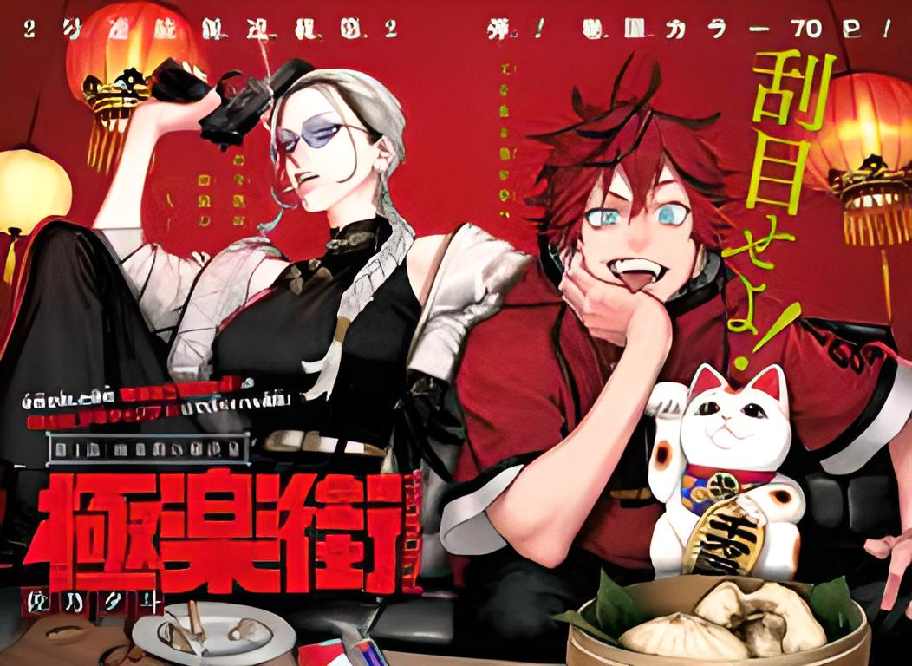
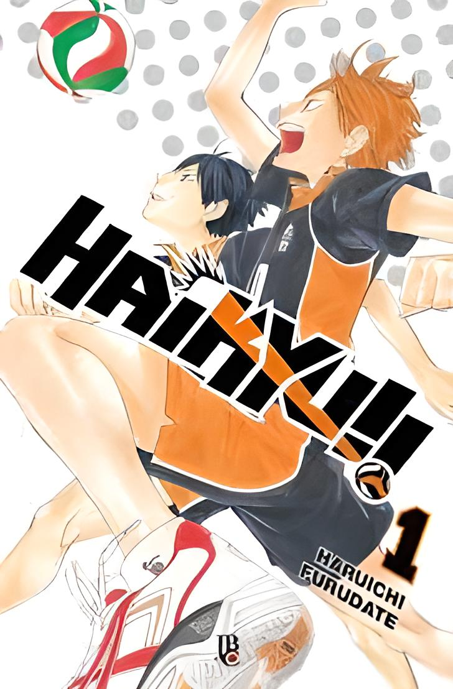
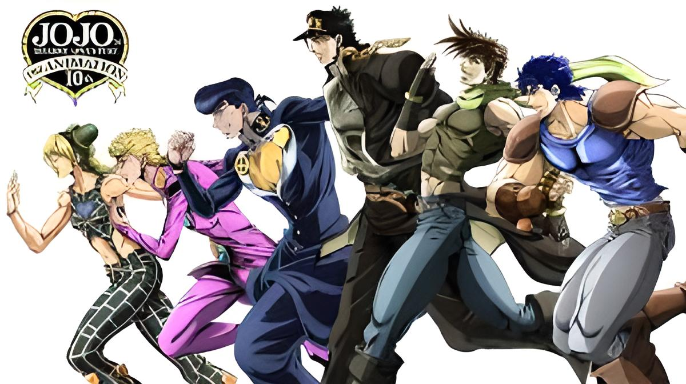

Berserk
Sinopse:
O misterioso Guts, o “Espadachim Negro”, carrega em sua mão mecânica uma enorme espada, e em seu pescoço uma estranha marca que atrai forças demoníacas. Em sua busca por vingança contra um antigo inimigo, nem tudo sai a seu favor, e ele recebe ajuda de uma fantástica criatura.

Chaisaw-man
Sinopse:
A história de Denji, um adolescente que passa por dificuldades financeiras, até que, certo dia, ele morre e renasce como o Homem-Motosserra após um pacto com um demônio

Blue Lock
Sinopse:
Após uma participação vergonhosa na Copa do Mundo de futebol de 2018, a Seleção Japonesa, busca uma forma de se tornar uma equipe vitoriosa e conquistar o torneio mundial.

Batsuichide Nakimushina Otonari-san
Sinopse:
Ochiai-san é uma mulher recém-divorciada e com problemas de outo-estima. Ela se muda pra um apartamento novo e lá conhece seu vizinho, Sawatari-kun.

Fire Force
Sinopse:
A cidade de Tóquio é atormentada por um fenômeno mortal: a combustão humana espontânea! Felizmente, uma equipe especial está lá para extinguir o inferno: a Fire Force! Os bombeiros da Special Fire Cathedral 8 estão prestes a receber um membro único.

Boku No Kokoro No Yabai Yatsu
Sinopse:
Ichikawa Kyotaro, um rapaz no degrau mais baixo da escada social da sua escola, acredita secretamente que é o protagonista torturado de algum thriller psicológico.

Yankee-kun To Hakujou Gaaru
Sinopse:
Akaza Yukiko frequenta uma escola secundária para cegos. Ela tem ambliopia, o que a faz reconhecer as cores apenas vagamente e a ler letras grandes com uma lupa. Quando ela anda ao ar livre sempre carrega uma bengala branca. No entanto, ela tem uma personalidade brilhante.

Yankee Jk Ayaka-san No Jakuten
Sinopse:
Seus segredos que só ele sabe... Itsuki Hayashi, um otaku tímido que acabou de entrar no ensino médio e quer se tornar um artista de mangá, está sentado ao lado de uma Yankee JK muito assustadora! A maneira como ela fala, a maneira como ela se parece, a maneira como ela age, tudo nela é aterrorizante... Mas, como se vê, ela tem muitas fraquezas inesperadas!

Vinland Saga
Sinopse:
Acontece no ano de 1013, onde acompanhamos a jornada de Thorfinn em busca de vingança. Ele trabalha para Askeladd, mas na verdade, seus planos são de um dia desafiar o viking para um duelo e finalmente matá-lo, fazendo assim justiça contra o homem que matou seu pai.

Tokyo Ghoul
Sinopse:
Em Tóquio, criaturas conhecidas como ghouls vivem entre os humanos e os devoram para sobreviver. Dentre eles, o jovem universitário Ken Kaneki leva uma vida pacata entre livros, até que um trágico encontro o coloca diante desses seres e o obriga a lutar por sua humanidade.

Super No Ura De Yani Suu Hanashi
Sinopse:
O Sasaki, um trabalhador de maia idade, cansado com as atividades diárias, sempre passava após o expediente em um mercado para ver a atendente do mercado, a Yamada. Pois a forma que ela trabalha reanima ele.

Spy x Family
Sinopse:
A história segue a vida de Twilight, um espião que precisa "formar uma família" de forma repentina para executar uma missão.

Sore Wa Rei No Shiwaza Desu
Sinopse:
Meu nome é Tori Nozomi, na minha classe chegou uma garota transferida, Kirishima Kyoko, ela é linda, estudiosa e educada. Eu só não esperava que essa bela garota fosse assombrada por uma fantasma extremamente assustadora, e para piorar, só eu consigo ver essa fantasma!!!

Shuumatsu No Walkure - Record Of Ragnarok
Sinopse:
A cada 1.000 anos, as divindades se reúnem sob o conselho de Valhalla para decidir sobre o direito da humanidade de continuar vivendo, ou por sua destruição, porém desta vez os deuses estão furiosos com o descaso humano para com o planeta, pendendo passim para aniquilar toda a raça humana, porém uma única ...

One Punch Man
Sinopse:
Conta a história de Saitama, um super-herói extremamente poderoso, que se entediou com a ausência dos desafios nas suas lutas contra o mal e procura encontrar um oponente digno.

One Piece
Sinopse:
One Piece segue a história de um grupo de piratas liderado por Monkey D. Luffy. O garoto, que possui um corpo elástico, pretende se tornar o Rei dos Piratas e para isso deve encontrar o One Piece, tesouro misterioso capaz de torná-lo imbatível, segundo as lendas

Mashle Magic And Muscles
Sinopse:
Para todos os outros no seu mundo dominado pela magia, o jovem e impotente Mash Vandead é uma ameaça ao pool genético e deve ser expurgado. Vivendo secretamente na floresta, ele passa todos os dias a treinar o seu corpo, construindo músculos fortes o suficiente para competir com a própria magia.

Kuchi Ga Saketemo Kimi Ni Wa (2020)
Sinopse:
Miroku-san, a mulher com a boca cortada, vai se casar com o estudante Kouichi do ensino médio para manter sua existência, já que sua família é responsável por manter superstições há gerações. Para adicionar, parece haver outra razão pela qual ele parece mais do que disposto... Miroku, entretanto, prefere usar sua própria força do que pedir emprestada a de outros. Assim, eles estabelecem um contrato...
.png)
Kubo-san Wa Mob Wo Yurusanai
Sinopse:
Estudante do Ensino Médio, Junta Shiraishi passa despercebido por todos, até mesmo quando ele está parado bem ali. No entanto, Kubo-san, a garota mais bonita de sua classe, parece encontrá-lo não importa onde esteja?!

Kimi No Koto Ga Dai Dai Dai Daisuki Na 100-Nin No Kanojo
Sinopse:
Aijou é um garoto que tem muito azar no amor e já foi rejeitado mais de 100 vezes. Desesperado ele vai num templo pedir ajuda aos deuses. E seu desejo foi atendido, para cada rejeição ele terá uma alma gêmea. Mas isso se tona uma maldição quando ele fica sabendo que se elas não forem felizes ao lado de sua alma gêmea, ele, elas vão morrer... Mas que merda, você ainda está lendo isso? Não escutou? São 100 garotas, 100! Não há tempo a perder!

Hirayasumi
Sinopse:
Ikuta Hiroto, de 29 anos, é um jovem despreocupado sem uma vida amorosa, emprego regular ou qualquer preocupação real com o futuro: um "freeter". Ele herda uma velha casa da avó do bairro, onde sua prima de 18 anos, Natsumi, vai morar com ele para estudar arte em Tóquio. Esta é uma história sobre Hiroto e as pessoas ao seu redor que lutam contra a vida.

Haikei... Koroshiya-san To Kekkon Shimashita
Sinopse:
A profissão de uma esposa calma... uma assassina!? Mas minha vida com minha esposa, que não consegue matar suas emoções na frente do marido, é emocionante de várias maneiras. o suficiente para ser morto por minha noiva. Comédia de amor do assassino casado!
Gokurakugai
Sinopse:
Os "solucionadores de problemas" entram em ação no distrito Gokuraku, um distrito diferenciado, sem leis...
Sakamoto Days
Sinopse:
Taro Sakamoto era o maior assassino do mundo, temido pelos vilões e admirado pelos assassinos. Mas um dia ele se apaixonou! Aposentadoria, casamento, paternidade e depois.. Sakamoto engordou! O cara gordinho que dirige a loja do bairro é na verdade um ex-assassino lendário! Ele pode proteger sua família do perigo? Prepare-se para experimentar um novo tipo de mangá de comédia e ação!

Ao No Hako
Sinopse:
Taiki Inomata está no time de badminton da grande escola de ensino fundamental e médio Eimei, conhecida pelo seu belo programa poliesportivo. Ele está apaixonado por Chinatsu Kano, uma garota mais velha do time de basquete que treina cedo todos os dias na quadra da escola. Um dia, a relação deles toma um rumo totalmente inesperado...

Kaiju No 8
Sinopse:
Numa cidade que é constantemente atacada por Kaijus — criaturas monstruosas — um homem de 32 anos se vê infeliz no seu medíocre trabalho de limpeza profissional de restos de Kaijus. Kafka Hibino sonha em trabalhar na Tropa de Defesa do Japão, até que um dia ele se envolve em um evento inesperado...!

Jujutsu Kaisen
Sinopse:
Jujutsu Kaisen Yuji é um gênio do atletismo, mas não tem interesse algum em ficar correndo em círculos. Ele é feliz como membro no Clube de Estudo de Fenômenos Psíquicos. Apesar de estar no clube apenas por diversão, tudo fica sério quando um espírito de verdade aparece na escola! A vida está prestes a se tornar muito interessante na Escola Sugisawa...

Saotome-senshu Hitakakusu
Sinopse:
Tsukishima Satoru recebe uma confissão de amor pelo talento do boxe feminino de sua escola Saotome Yae, porém ele a rejeita por ele não querer atrapalhar a carreira de boxeadora dela (e também não ser espancado por seus fãs). Porém com o auxilio da treinadora de Saotome, ela os ajuda a manterem um relacionamento secreto…

Out
Sinopse:
Iguchi Tatsuya, 17 anos, acabou de ser solto do reformatório juvenil e agora está em liberdade condicional. Ele teve de mudar para uma nova cidade, longe da má influência de seus velhos amigos, e está sob os cuidados de sua tia. Ele está determinado a não voltar ao reformatório, e trabalha duro no restaurante de sua tia. Entretanto ele ainda tem a mesma personalidade, a mesma tendência a violência, e ainda acaba caindo com os mesmos tipos de pessoas. Será bem difícil para ele ficar longe de problemas.

Haikyuu
Sinopse:
Um adolescente se encanta pelo vôlei ao assistir um campeonato pela TV. Ele e outro amigo tentam formar um clube para o esporte dentro da escola, mas encontram dificuldades em recrutar jogadores. Após finalmente conseguir outros cinco jovens dispostos a embarcar nesse projeto, eles entram em um campeonato de verdade.
Hajime No Ippo
Sinopse:
Ippo Makunouchi, um tímido estudante de ensino médio, é um dia salvo se der espancado, por Takamura, um boxeador. Encantado pelas habilidade de Takamura e por vídeos de boxe, Ippo decide enfrentar o mundo profissional do boxe!

Jojo
Sinopse:
JoJo's conta a história da família Joestar, uma família cujos vários membros descobrem que estão destinados a derrubar inimigos sobrenaturais, tais como Dio Brando um vampiro semi-imortal, Yoshikage Kira um serial killer e Diavolo um líder de gangue usando poderes únicos que possuem.
Yofukashi No Uta
Sinopse:
Incapaz de dormir ou encontrar satisfação em sua vida, Yamori Kou começa explorar a cidade pela noite quando ele encontra uma garota que lhe oferece ajuda para lutar contra sua insônia.

Tomodachi
Sinopse:
Katagiri Yuuichi sabe que amigos são mais importantes que dinheiro. Mas ele também sabe o terror que o dinheiro pode fazer com as pessoas. Para comparecer em uma viagem escolar com seus melhores amigos, Yuuichi junta dinheiro trabalhando incessantemente até bater a meta e cumprir sua promessa. Entretanto, após ter conseguido seu objetivo, os fundos escolares são roubados, o que fez a classe entrar em pânico e desconfiar de todos envolvidos. Yuuichi e seus amigos são raptados por pessoas misteriosas, e ao acordar são forçados a participar em um jogo misterioso chamado "o Jogo dos Amigos (Tomodachi Game)". Nele é revelado que um deles forçou a participação dos demais amigos para pagar uma dívida altíssima o qual todos teriam que assumir e quitá-la para vencer e completar o jogo. Agora Yuuichi terá que descobrir quem é o traidor e os mistérios envolvidos nesse jogo.